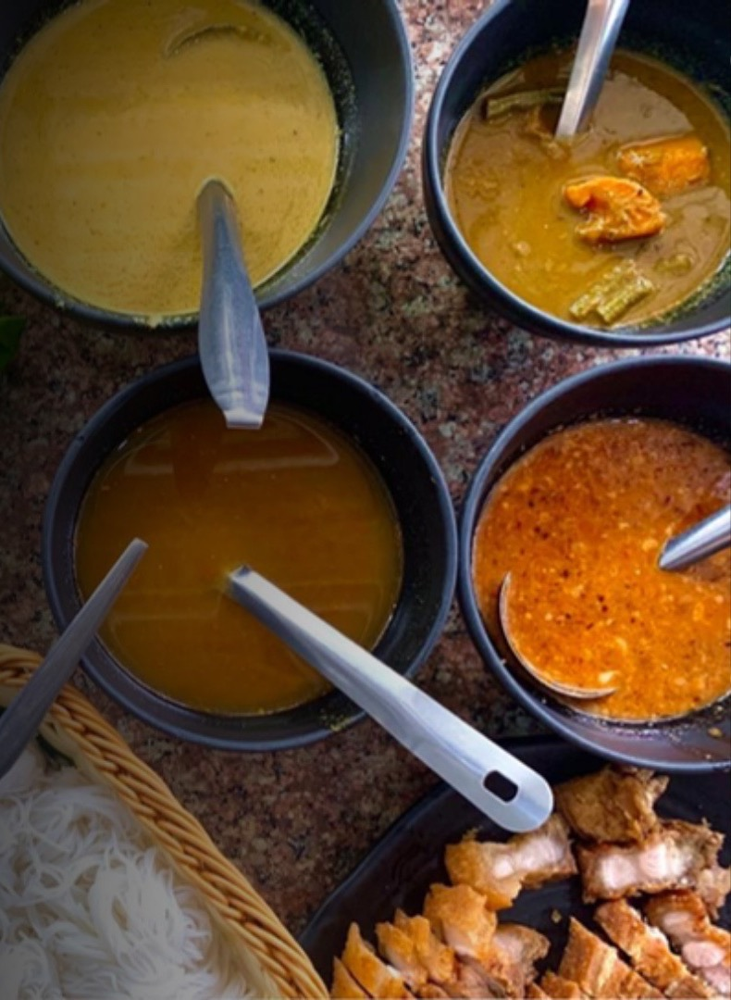
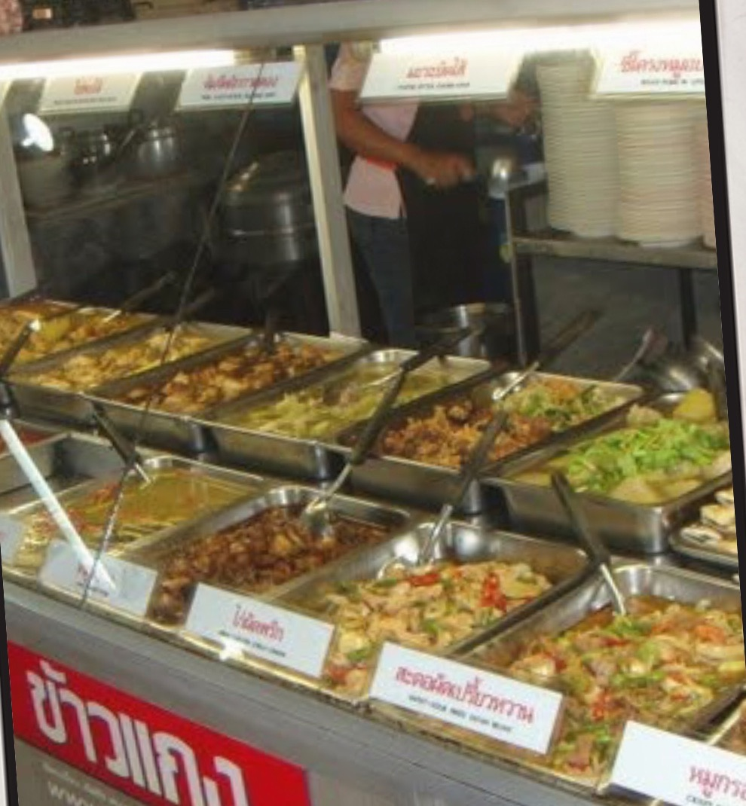
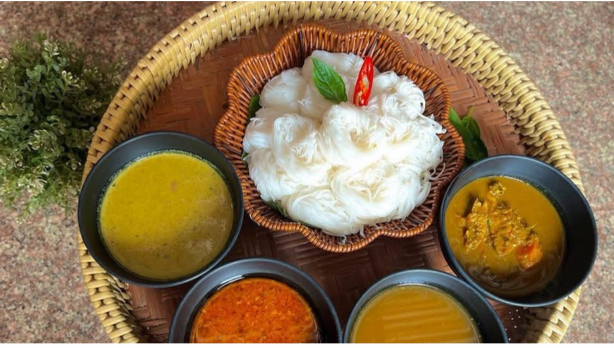
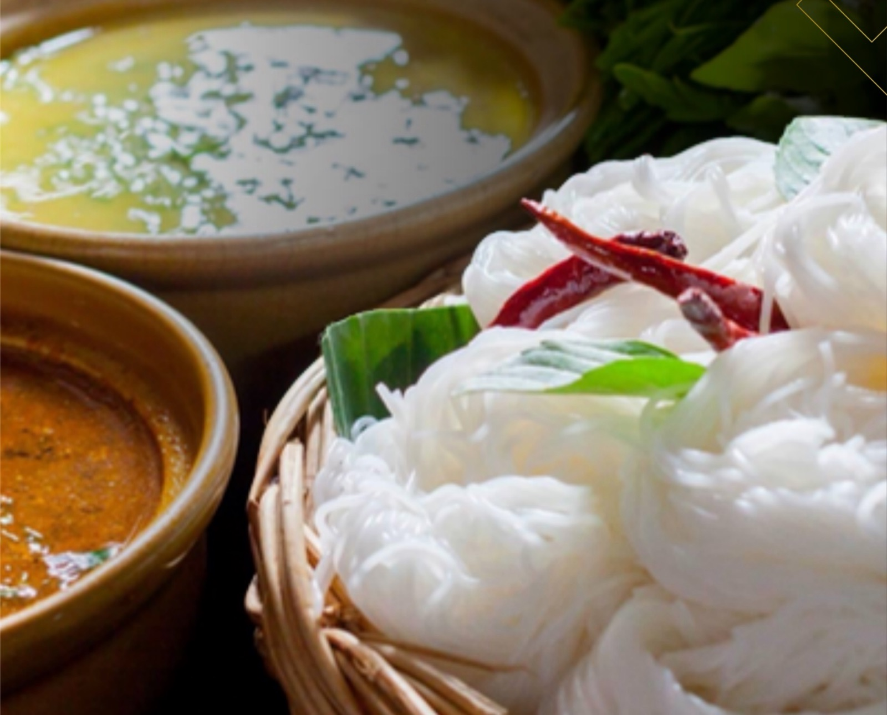
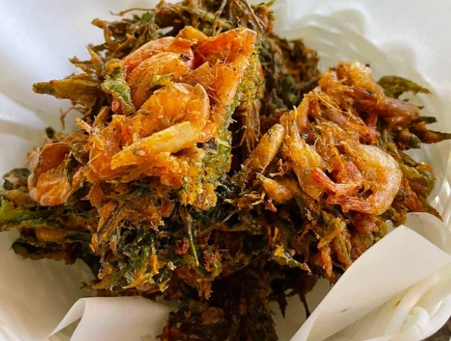
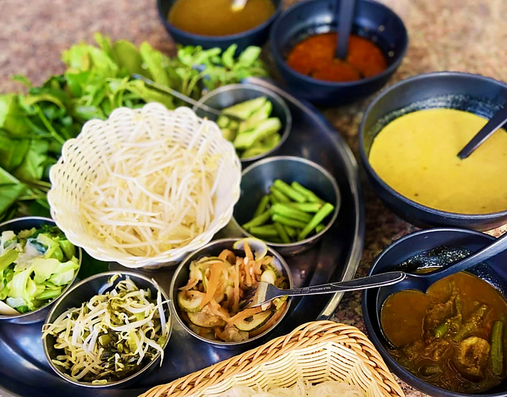
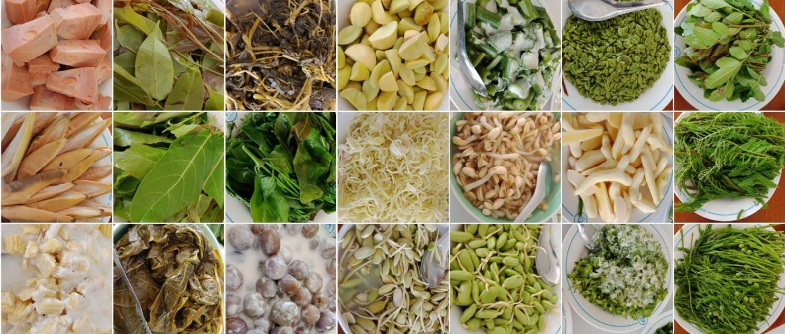

Family Recipes
สูตรลับต้นตำรับ
Secret recipes from the Na Nakhon family, cooked the same way for nearly fifty years.

Southern Thai khanom jeen · since 1977
A legend that so many long to taste. The original, secret-recipe dishes of Mueang Khon, cooked from the heart, the Southern way.
Our story · เรื่องราวของเรา
ร้านขนมจีนเมืองคอน ถนนพานยม ต้นตำรับขนมจีนน้ำยาปักษ์ใต้สูตรชาววังจากต้นตระกูล ณ นคร จากวันนั้นถึงวันนี้ รสชาติเข้มข้นจัดจ้านยังคงโด่งดังเลื่องลือ มีลูกค้าทั้งในประเทศและต่างประเทศแวะเวียนมาไม่ขาดสายตลอดทั้งปี
Since 1977 our family has served Southern-style khanom jeen from a recipe handed down through the Na Nakhon family. The flavours are as rich and fiery as they were on day one, and guests from all over Thailand and abroad still stop by all year round.



Family Recipes
Secret recipes from the Na Nakhon family, cooked the same way for nearly fifty years.
Cultural Heritage
Khanom jeen with ผักเหนาะ is a symbol of Nakhon Si Thammarat itself.
Made with heart
Nothing rushed, nothing made to impress. Made so that you come back.
The City · เมืองคอน
Mornings begin near Wat Phra Mahathat, the temple that anchors the old city, and the streets fan out toward the markets. Ten minutes on foot from the temple, on Thanon Phanyom, a pot is already simmering.
0 / 10 min walk · keep scrolling to walk there
The five nam ya · น้ำยา 5 อย่าง
Soft, fermented rice noodles are only the start. The real subject is the sauce: in the South it is called nam ya, and here there are five. Tap a bowl to build it.
Coconut milk nam ya
Good for first-timers
Mellow and creamy, the gentle way in.

Best with · กินคู่กับ
ทอดมันกุ้งใบเล็บครุฑ
Crisp shrimp fritters to dip into the mild coconut curry.
60.-/ ชุด
Heat and richness are a rough guide. Ask at the counter if you’re unsure.

How to eat · วิธีกิน
Eat it like a local.
Order a plate, or a set to share, of soft fermented rice noodles.
Pick your nam ya, or try four at once with the big set.
Pile on fresh vegetables and herbs from the table, and dip something crispy into what’s left in the bowl.

Tap to taste · จับคู่ของทอด
Tap a side dish to see its best match.
Dessert · ของหวาน
Southern Thai Coconut Rice Pudding
ขนมหวานพื้นบ้านโบราณของจังหวัดนครศรีธรรมราช
A rare, heritage dessert: melt-in-your-mouth rice pudding with a rich, savory salted coconut cream, topped with crunchy toasted mung beans. Few places still make it, so eat it while you can.
30.- also try ขนมรวมมิตร, 30.-
Visit · มาเยือน